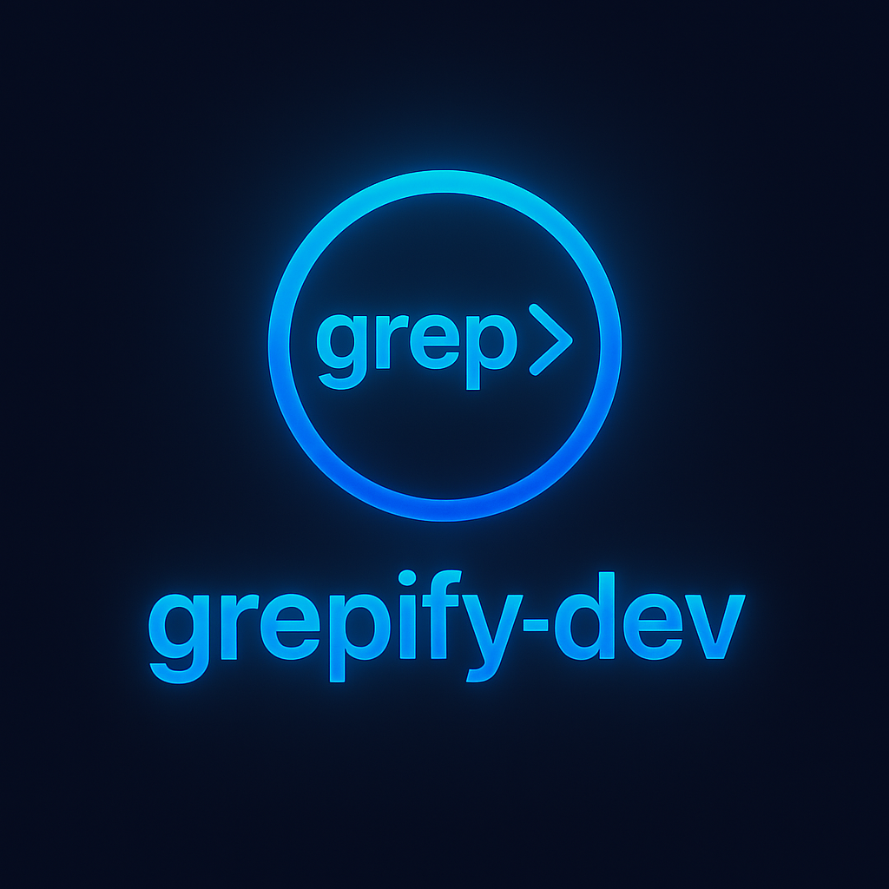
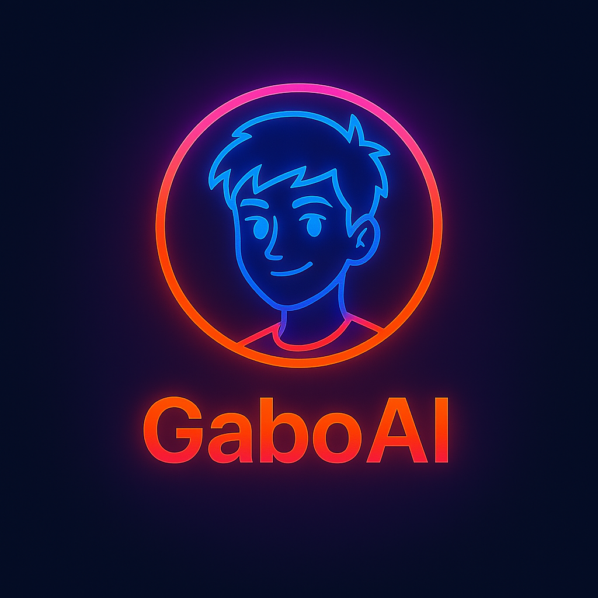
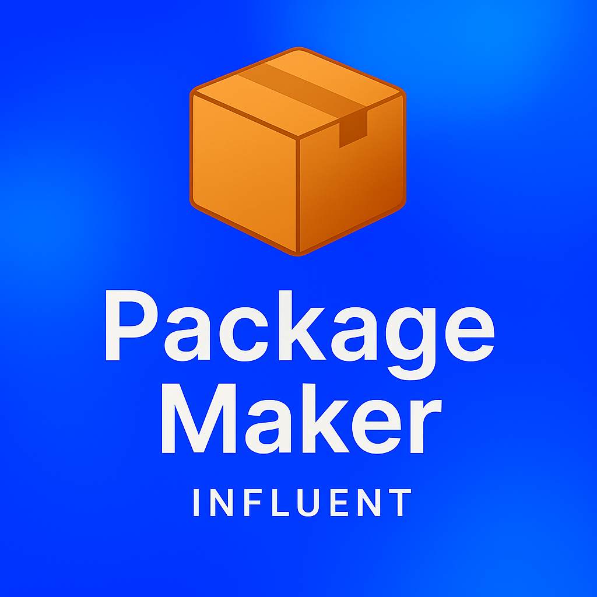
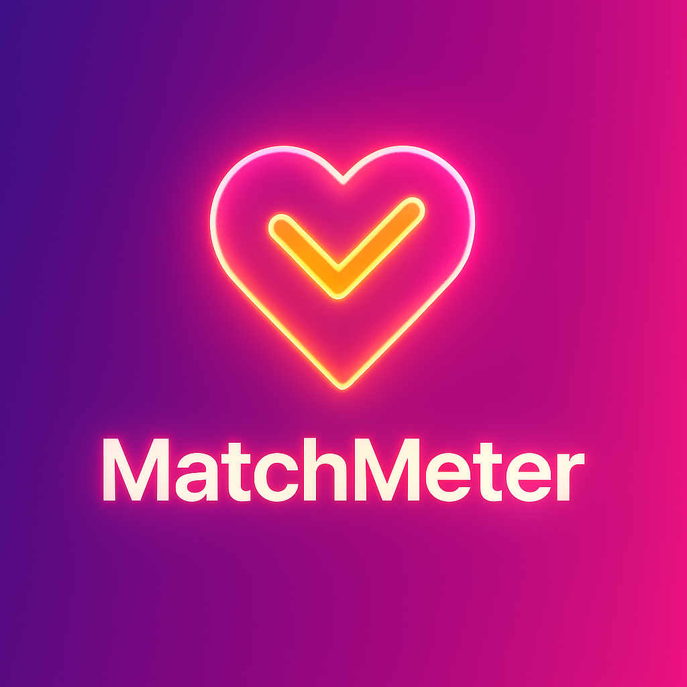

Documentación de Proyectos

grepify-dev
Motor avanzado para procesamiento de texto en CLI con filtros y detección inteligente...

gabo-ai
Avatar digital con IA. Adaptable, visual, una extensión creativa con expresión adolescente...

packagemaker
Empaquetador multiplataforma con diseño claro, orbes, neon y compatibilidad total...
GlintPay
Solución de pagos con estética elegante, tipografía moderna y alta velocidad de integración...

matchmeter
Plataforma de métricas comparativas con curvas dinámicas y diseño visual enfocado en UX...